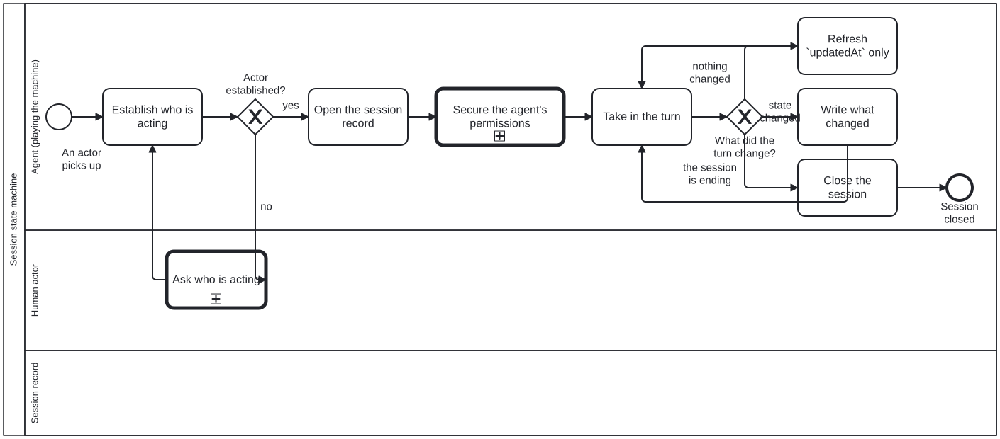

Generated from
cat-harness/processes/process/session-state-machine.bpmnbygen-processes-viz.ts— do not edit here. All processes
Process_SessionStateMachine · advisory · 8 step(s)
The shape of a session from the outside: establish who is acting, open a record for them, take each turn in, and write down only what actually changed.
You are in this process for the whole of a session, underneath whatever else you are doing — it is the frame the other processes run inside. The first gateway is the one that matters: an agent that cannot say who is acting ASKS, because every later decision about permissions, preferences and language depends on an answer nobody guessed.
The distinction between refreshing a timestamp and writing what changed is the diagram’s whole content. A session record that logs every turn as a change cannot be read for what happened, and one that logs none cannot be read at all.

| lane | role | what it does here |
|---|---|---|
| Agent (playing the machine) | authoring-agent |
Classifies every turn into exactly one of three effects at Gateway_TurnEffect — nothing changed, state changed, ending — a fresh judgement each time because a table cannot key on intent and a wrong read is corrected by the next turn. It records that a bean was claimed or an instance closed, at A_UpdateSession, but performs none of those actions itself: the record and the thing it describes are kept deliberately separate. |
| Human actor | user |
Entered only when Gateway_ActorKnown cannot confirm an actor — the one fact in this whole record that the machine cannot recover by reading the repository — and answered once: the response is recorded so this lane is never re-entered for the same session, which is what keeps asking who is acting from becoming a repeated interruption. |
| Session record | session-record |
— |
Every one of the 8 step(s) is documented.
| step | lane | skill / sub-process | what it does |
|---|---|---|---|
Establish who is actingA_IdentifyActor |
Agent (playing the machine) | session-context |
The first step and not a formality: actor is the one field of the record that nothing else can supply. Every other field is recoverable by reading the repository; who is acting is not. |
Ask who is actingA_AskWhoIsActing |
Human actor | interaction-modality |
The one step that needs a person. Asked ONCE and recorded, never re-asked: cat-harness/memory/interaction.json and the record exist so that a preference stated once is not requested again, which is WCAG 2.2 SC 3.3.7. |
Open the session recordA_OpenSession |
Agent (playing the machine) | session-context |
Writes id, actor and startedAt, with open and claimed empty. An empty open is the NORMAL state, not an unfinished one: an agent reading, answering or deciding is in no process at all. |
Secure the agent’s permissionsCall_SecurePermissions |
Agent (playing the machine) | calls Secure agent permissionsagent-permissions |
Once the actor is known and the record is open, check that the coding agent acting here holds the permissions this instance’s processes need, granted by a person and recorded, and ask for any that are missing. This is where initiating the harness for an actor secures them, rather than the first denied command. A run that finds them current returns without asking anything; the same process is called on demand when an action is denied later in the session. Vendor-neutral: the agent is a Tool, and its config is written through that Tool’s adapter. Skill: agent-permissions. |
Take in the turnA_ReadTurn |
Agent (playing the machine) | — | A turn is anything that arrives — a person’s message, a tool result, a notification. The machine advances on turns rather than on a clock, because a session that has been told nothing has not changed. |
Refresh updatedAt onlyA_Touch |
Agent (playing the machine) | session-context |
Nothing changed, and saying so is the point. A record that stops being written looks exactly like an abandoned session; a refreshed timestamp with no other change says the session is alive and idle, which is a different fact and the commonest one. |
Write what changedA_UpdateSession |
Agent (playing the machine) | session-context |
An instance opened or closed, a bean claimed, a wait started or ended. All by REFERENCE: the bean and the instance are each the authority on themselves, and a status copied here would be free to contradict them. NO cat-harness.processes:bean on this step. It records that a claim happened; it does not claim. |
Close the sessionA_CloseSession |
Agent (playing the machine) | session-context |
Records that the actor stopped. It does NOT resolve beans or complete instances: those outlive the session by design, and a machine that closed them on the way out would be asserting work finished because somebody went away. |
Every one of the 2 decision(s) is documented.
| decision | what decides it | branches |
|---|---|---|
Actor established?Gateway_ActorKnown |
Is it established who is acting? no asks; yes opens the session record. A session is never opened for an actor it has not identified. |
no → Ask who is acting yes → Open the session record |
What did the turn change?Gateway_TurnEffect |
THE non-deterministic point, and the reason this process exists. Three branches, and the agent chooses. | nothing changed → Refresh updatedAt onlystate changed → Write what changed the session is ending → Close the session |